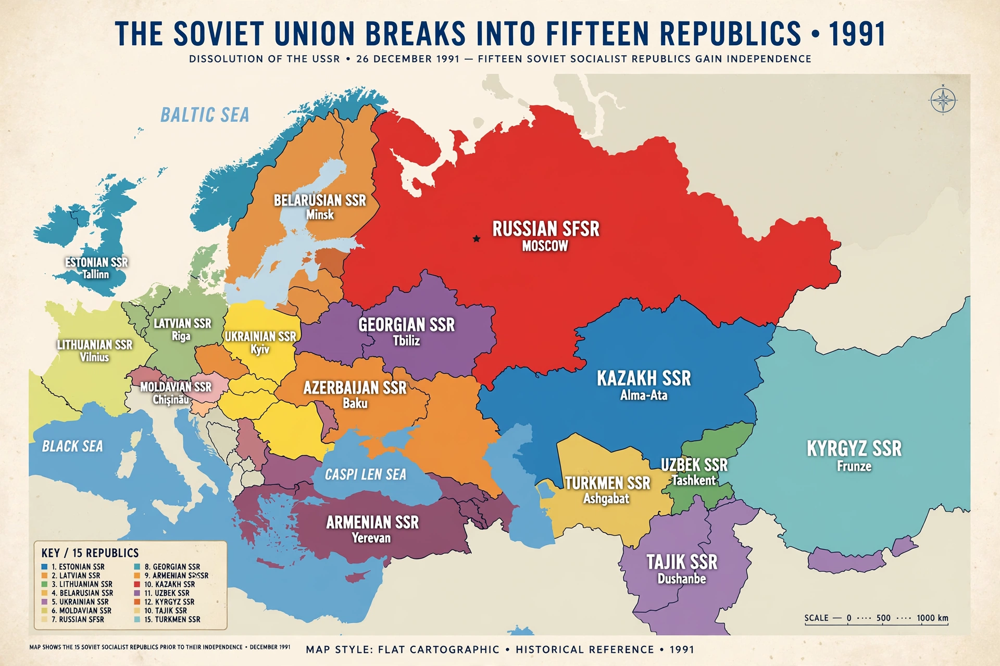

The dissolution of the Soviet Union was the process of internal disintegration within the Soviet Union (USSR) which resulted in the end of the country's existence as a sovereign state. It brought an end to General Secretary Mikhail Gorbachev's effort to reform the Soviet political and economic system in an attempt to stop a period of political stalemate and economic backsliding. The Soviet Union had experienced internal stagnation and ethnic separatism. Although the country was a unitary state, many of its constituent republics had their own policies and movements for greater autonomy or outright independence.

| Date | 11 March 1990 – 26 December 1991 |
|---|---|
| Location | Soviet Union |
| Outcome | End of the USSR; independence of 15 republics; formation of the Commonwealth of Independent States; end of the Cold War |
| Key figures | Mikhail Gorbachev, Boris Yeltsin |
In March 1985, Mikhail Gorbachev became General Secretary of the Communist Party of the Soviet Union. He launched the reform policies of glasnost (openness) and perestroika (restructuring), intended to revitalise the stagnating Soviet economy and make the political system more transparent. Instead, the loosening of censorship and political controls unleashed nationalist movements across the union republics, particularly in the Baltic states, the Caucasus and Ukraine.
On 11 March 1990, Lithuania became the first republic to declare the restoration of its independence. In June 1990 the Russian SFSR, led by Boris Yeltsin, declared state sovereignty within the Union, triggering a "parade of sovereignties" as republic after republic asserted the primacy of its own laws over those of the Union. Gorbachev negotiated a New Union Treaty that would have preserved a decentralised federation, and a referendum in March 1991 showed majority support for a renewed union in the participating republics.
On 19 August 1991, one day before the New Union Treaty was to be signed, hard-line Communist officials launched a coup attempt, placing Gorbachev under house arrest in Crimea. The coup collapsed within three days in the face of popular resistance led by Yeltsin in Moscow. In its aftermath, republics declared independence in rapid succession. On 8 December 1991, the leaders of Russia, Ukraine and Belarus signed the Belovezha Accords, declaring that the USSR had ceased to exist and establishing the Commonwealth of Independent States. On 25 December, Gorbachev resigned as president; the following day, 26 December 1991, the Soviet of Republics formally voted the Union out of existence.
The dissolution ended the Cold War and left the United States as the world's sole superpower. Fifteen independent states emerged, inheriting the Soviet nuclear arsenal (later consolidated in Russia), its seat on the United Nations Security Council (taken by the Russian Federation), and a difficult transition to market economies. Armed conflicts erupted in several regions, including Nagorno-Karabakh, Transnistria, Chechnya and Tajikistan.